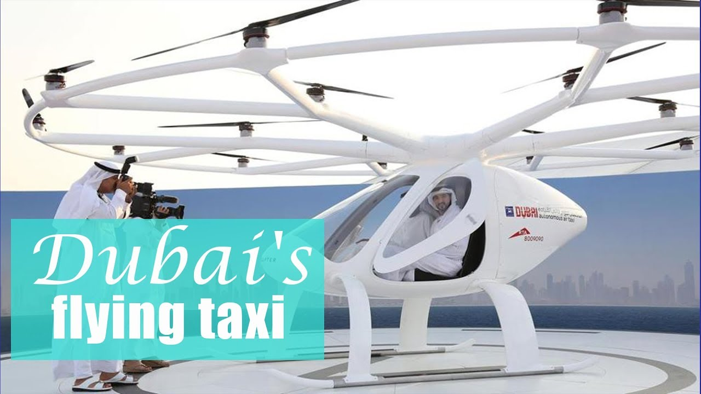

Latest Technologies in the UAE
While most cities are still caught up wondering about regular self-driving cars, Dubai is busy putting self driving flying cars through their paces. Given a test flight last month, Dubai's Autonomous Air Taxi(AAT) is described as the world's first, "self-flying taxi service."

The UAE has also attracted investments in emerging technologies, with the government's investment in AI alone estimated to reach more than $33 billion by 2027. These investments are bearing fruit and smart cities are sprining up with autonomous transportation systems, advanced healthcare, and renewable energy